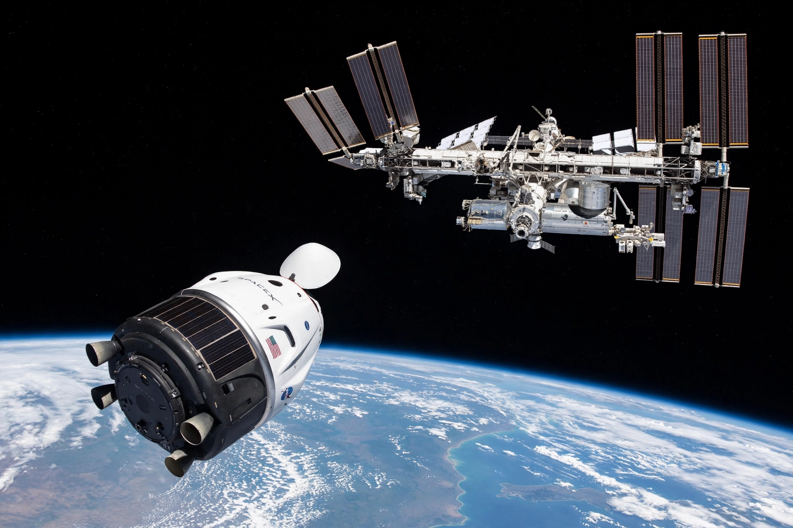

Crew Dragon
From Wikipedia, the free encyclopedia
| Crew Dragon | |
|---|---|
| Manufacturer | SpaceX |
| Operator | SpaceX / NASA |
| Crew | Up to 7 (4 on NASA missions) |
| First crewed flight | 30 May 2020 (Demo-2) |
| Launch vehicle | Falcon 9 |

Crew Dragon approaching the ISS.Crew Dragon is a reusable crewed spacecraft developed and operated by SpaceX as part of NASA's Commercial Crew Program. Derived from the cargo Dragon, it carries astronauts to and from the International Space Station and for free-flying private missions. Its first crewed flight, Demo-2 in May 2020, restored American crewed orbital launch capability for the first time since the Space Shuttle retired in 2011.
The capsule seats up to seven, flies autonomously with touchscreen controls, and docks with the station without crew intervention. Unlike the Shuttle it launches atop a rocket — the Falcon 9 — with a launch-abort system of eight SuperDraco engines intended to pull the capsule away from a failing booster at any point in flight.
Missions
After the uncrewed Demo-1 flight in 2019 and Demo-2 in 2020, Crew Dragon began regular six-month crew rotations for NASA (Crew-1 onward). It has also flown purely private missions: Inspiration4 (2021), the first all-civilian orbital flight; Axiom Space missions carrying commercial astronauts to the ISS; and Polaris Dawn (2024), which reached the highest Earth orbit since Apollo and performed the first commercial spacewalk, testing SpaceX's EVA suit.
When Boeing's Starliner suffered thruster problems on its 2024 crewed test flight, NASA returned that capsule uncrewed and reassigned its two astronauts to come home aboard a Crew Dragon — underlining Dragon's role as the programme's reliable workhorse.
Cargo version
The Cargo Dragon 2 variant flies uncrewed resupply missions under NASA's Commercial Resupply Services contracts, docking autonomously like its crewed sibling and returning experiments and hardware to a Pacific splashdown.
See also
SpaceX · Falcon 9 · International Space Station · Boeing Starliner · Space Shuttle